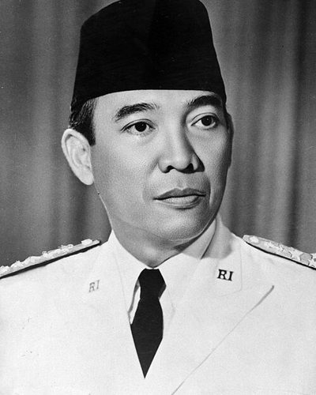

Ideologies / Nationalist
What is Pancasila?
Pancasila is a political ideology in the Nationalist family. Sukarno proposed five foundations for an independent Indonesia: a single nationhood covering the whole archipelago, a humane internationalism, government by deliberation and consensus among representatives, social justice and prosperity for all, and belief in God with respect between religions. He said the five could be pressed into one idea, mutual cooperation. The state belongs to no single group, faith or class.
Five principles for one nation of many islands and faiths.
Defined from: Sukarno, The Birth of Pancasila (speech of 1 June 1945) (1945)
See how close you are to Pancasila Dare a friend to answer as one


Where Pancasila stands on 13 axes
Each axis runs from 0 to 100. A score of 50 is the middle. On a classic compass it sits in the Authoritarian Left quadrant.
| Axis | Position | Score | In words |
|---|---|---|---|
| EconomyMarket to Planned | 60 | Leans Planned | |
| OwnershipPrivate to Collective | 55 | Balanced | |
| RightsLiberty to Security | 55 | Balanced | |
| GovernmentDemocracy to Autocracy | 40 | Leans Democracy | |
| StructureDecentralised to Centralised | 70 | Strongly Centralised | |
| NationInternationalist to Nationalist | 75 | Strongly Nationalist | |
| ImmigrationMulticulturalist to Assimilationist | 35 | Leans Multiculturalist | |
| ValuesProgressive to Traditional | 55 | Balanced | |
| TechnologyAccelerationist to Precautionary | 40 | Leans Accelerationist | |
| EnvironmentIndustrialist to Environmentalist | 35 | Leans Industrialist | |
| ReligionSecular to Religious | 70 | Strongly Religious | |
| MilitaryPacifist to Militarist | 45 | Balanced | |
| TradeFree Trade to Protectionist | 60 | Leans Protectionist |
Ideologies closest to Pancasila
- Mazzinian Republicanism84% alike
- Peronism (Justicialism)83% alike
- Gaullism82% alike
- Romantic Nationalism80% alike
- One Nation Conservatism80% alike
Its opposite on this map is Crypto Anarchism, at 39%.
Parties near Pancasila
Indonesian Independence Movement (Indonesia) was the first party or movement to carry it, placed here from Sukarno's speech The Birth of Pancasila (1945).
- Indonesian Independence MovementIndonesia. Sukarno's speech The Birth of Pancasila (1945)93% alike
- Chama Cha MapinduziTanzania. CCM Election Manifesto 2025 to 2030 (2025)87% alike
- Social Democratic Party of RomaniaRomania. Programul de guvernare 2024 to 2028 (2024)86% alike
- GerindraIndonesia. Asta Cita (2023)85% alike
Common questions
What is Pancasila?
Pancasila is a political ideology in the Nationalist family. Sukarno proposed five foundations for an independent Indonesia: a single nationhood covering the whole archipelago, a humane internationalism, government by deliberation and consensus among representatives, social justice and prosperity for all, and belief in God with respect between religions. He said the five could be pressed into one idea, mutual cooperation. The state belongs to no single group, faith or class.
What does Pancasila believe?
In one line: Five principles for one nation of many islands and faiths. Its strongest positions are Nationalist, Centralised, Religious. Sukarno proposed five foundations for an independent Indonesia: a single nationhood covering the whole archipelago, a humane internationalism, government by deliberation and consensus among representatives, social justice and prosperity for all, and belief in God with respect between religions. He said the five could be pressed into one idea, mutual cooperation. The state belongs to no single group, faith or class.
Who founded Pancasila?
Pancasila is defined here from The Birth of Pancasila (speech of 1 June 1945) (1945) by Sukarno. The thinker most tied to it is Sukarno (1901 to 1970).
Is Pancasila left wing or right wing?
On a classic two axis compass Pancasila falls in the Authoritarian Left quadrant, which means the economic left and the middle between libertarian and authoritarian. Left and right hide a lot, though, which is why EthosScales scores it on thirteen separate axes.
How is Pancasila different from Mazzinian Republicanism?
They are close, at a 84% match. The biggest gaps are on Government, where Pancasila scores 40 and Mazzinian Republicanism scores 10, and Immigration, where Pancasila scores 35 and Mazzinian Republicanism scores 60. On each axis, 0 is one end and 100 is the other.
Think this is wrong? Suggest a correction. The scores are editorial estimates.